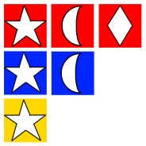

Balloonpop
Board Game Arena 官方规则文档
Gameplay
On a turn, you roll three dice, with each die face showing a balloon color and a shape, then record the results by circling numbers from the bottom of the column, going up. The highest number you circle in a column equals the points that you score.
Not happy with your results? Then roll again with any number of dice — but you have to roll an additional die as well, which means you'll circle more results on your scoresheet. You can reroll a second time as well to add a fifth die to your results. This (possibly) gives you better control over the results, while helping you ascend the columns more quickly to higher potential scores.
Once you like your results, or have re-rolled twice, record the results of ALL your rolled dice by circling a number once for EVERY die showing that color or shape.
However, at the top of each column is a different colored number that's much lower than the numbers immediately below it. Hit this number, and your balloon's popped because it went too high. What's more, this popping triggers a scoring break that occurs at the end of the round, with everyone scoring based on their current heights in the columns. You want to go high, but don't trigger the break or else your points will plummet right before scoring.
After three breaks, players total their scores to see who wins.
- From BGG Description (https://boardgamegeek.com/boardgame/212027/balloon-pop)
Die face distribution (rough sketch)

Solo ranking
| 0-90 | ⭐ |
|---|---|
| 91-110 | ⭐⭐ |
| 111-125 | ⭐⭐⭐ |
| 126-135 | ⭐⭐⭐⭐ |
| 136-145 | ⭐⭐⭐⭐⭐ |
| 146-155 | ⭐⭐⭐⭐⭐⭐ |
| 156-165 | ⭐⭐⭐⭐⭐⭐⭐ |
| 166-175 | ⭐⭐⭐⭐⭐⭐⭐⭐ |
| 176-195 | ⭐⭐⭐⭐⭐⭐⭐⭐⭐ |
| >196 | ⭐⭐⭐⭐⭐⭐⭐⭐⭐⭐ |